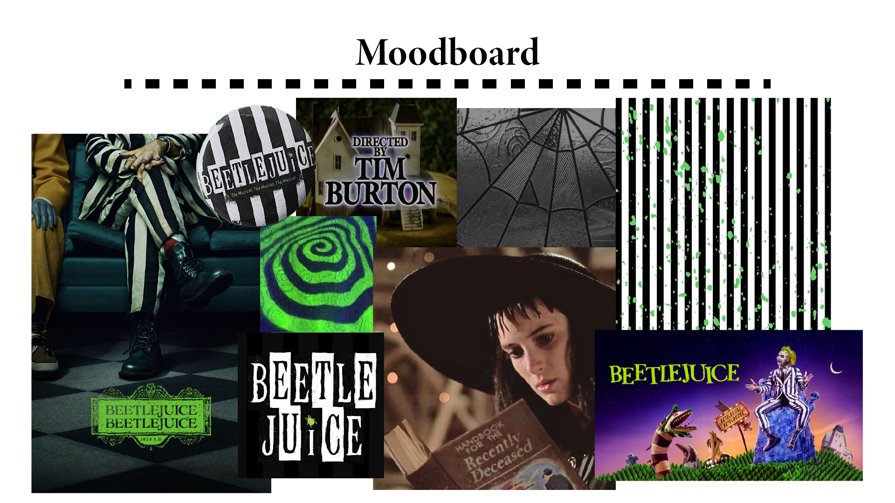
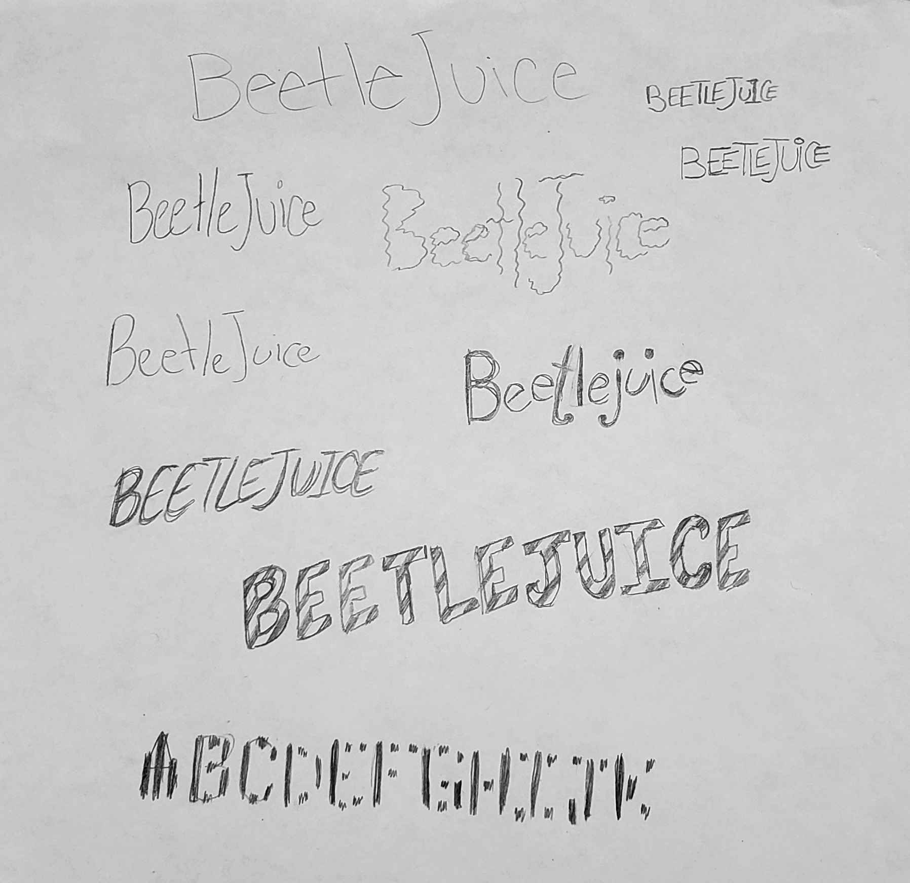
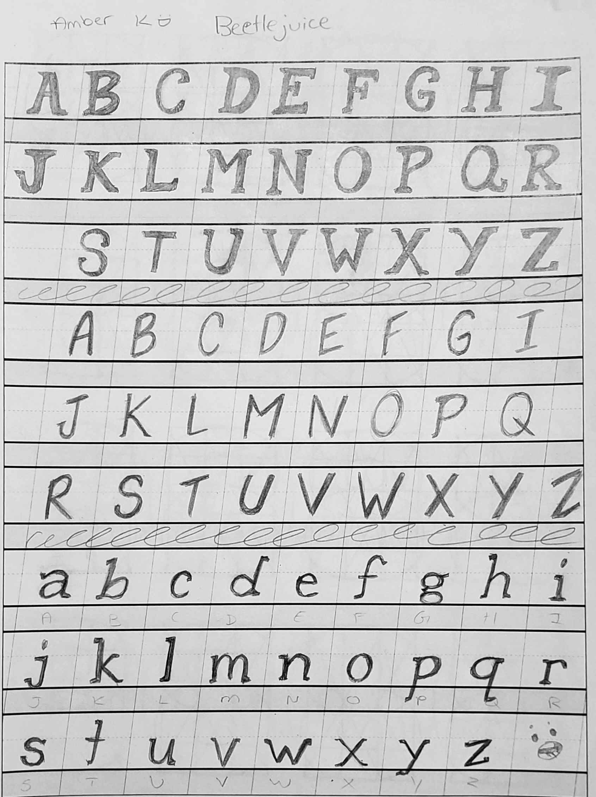
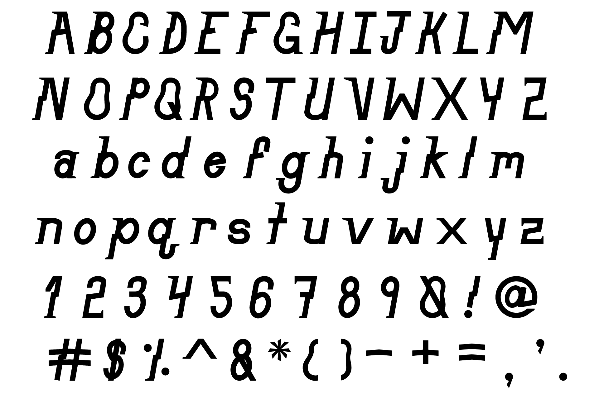
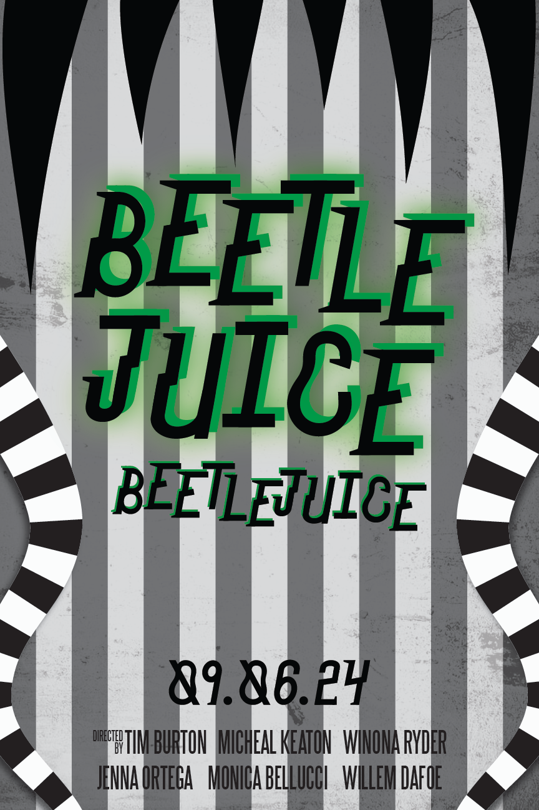
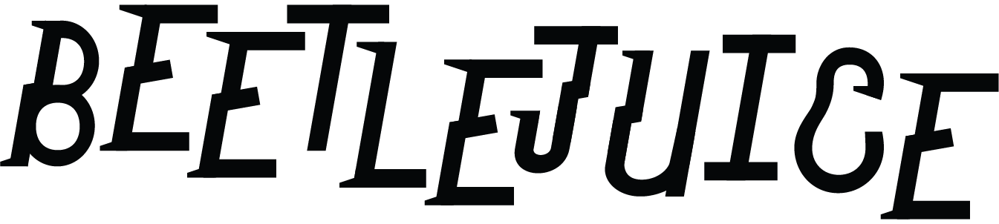
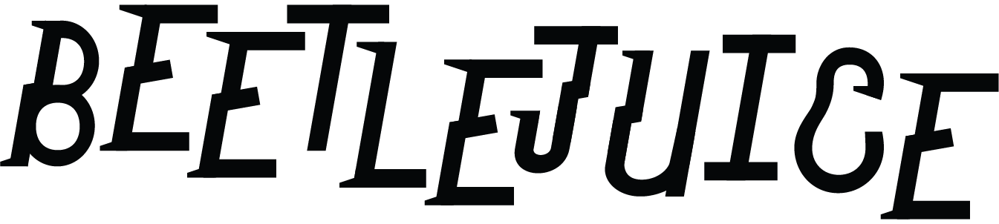
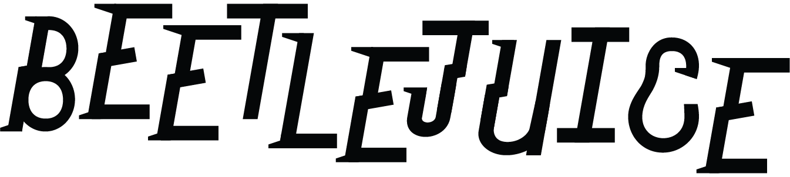
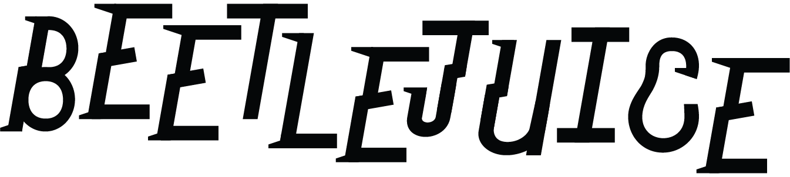

 


The goal of this project to create a movie poster and artefacts with my own handmade typeface that I designed. The challenge here is to effectively create a typeface that follows the movies art direction and mood. The strategy I used was to watch both movies, and note was made them so enjoyable and unique. After creating my moodboard, I explored how my typeface would look through some quick sketches, making sure to keep more of the unique feel. The takeaway from this project was how to design and digitalise my own illustrated/drawn typeface, and apply it into my final pieces.
